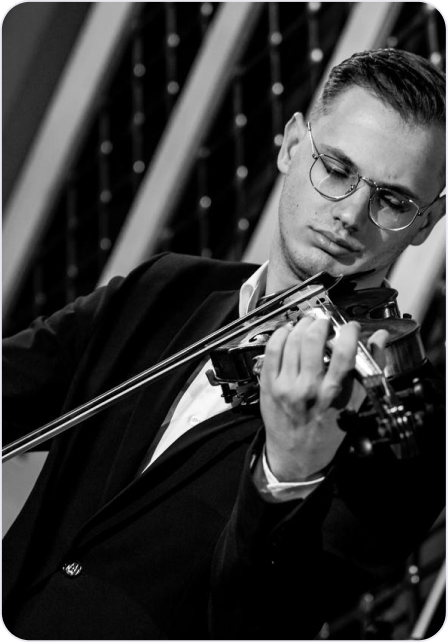
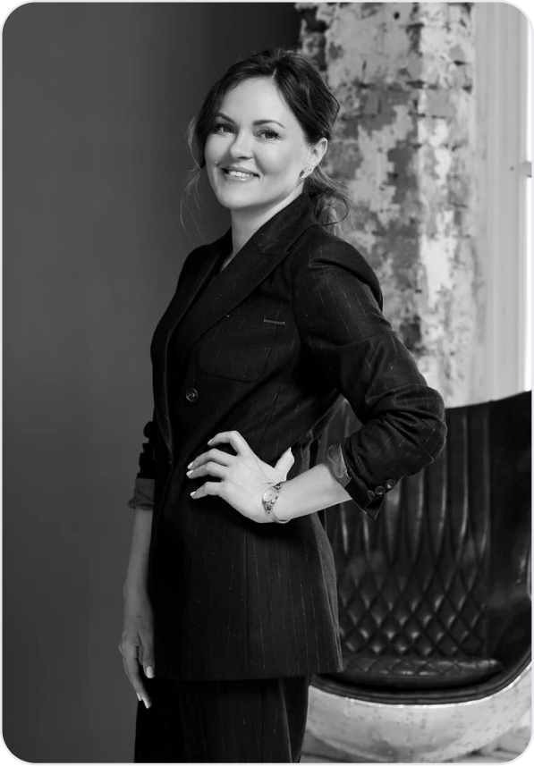
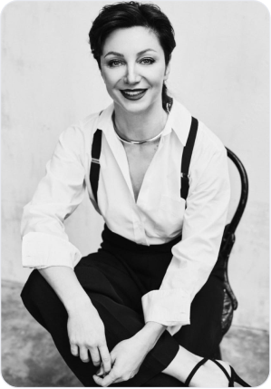

Метафора моста, лежащая в основе проекта, задает способ мышления и определяет логику наших инициатив.
— пространство передачи опыта и преемственности между мастерами и молодыми артистами.
соединение музыки, театра, танца, литературы и поиск новых междисциплинарных форм.
объединение локальных культурных практик в общее культурное пространство.
открытость к международному сотрудничеству и обмену культурными смыслами.
постоянное развитие, где каждый следующий шаг глубже и сильнее предыдущего.
В команде сочетаются художественная экспертиза, сценический опыт и опыт реализации культурных и благотворительных проектов, а также понимание институциональных и финансовых процессов. Это позволяет нам работать от уровня идей до реализации устойчивых, долгосрочных инициатив.

профессиональный музыкант, активный участник образовательных и благотворительных инициатив в сфере искусства, формирует художественное направление и содержательную основу проектов.

обладает значительным опытом реализации культурных проектов в сфере кино, музыки и искусства, развивает стратегическое и партнёрское направление.

общественный деятель, юрист и медиатор со значительным опытом на стыке права, управления и кросс-культурной коммуникации, обеспечивает институциональную устойчивость проекта и правовую основу его развития.
АНО «МОСТ» — автономная некоммерческая организация в сфере культуры, искусства, благотворительности и образования. Проект построен вокруг идеи соединения: людей и поколений, традиций и современного культурного контекста, регионов и федеральных центров. Мы реализуем культурные и благотворительные проекты, поддерживаем таланты и создаём условия для развития устойчивой культурной среды.